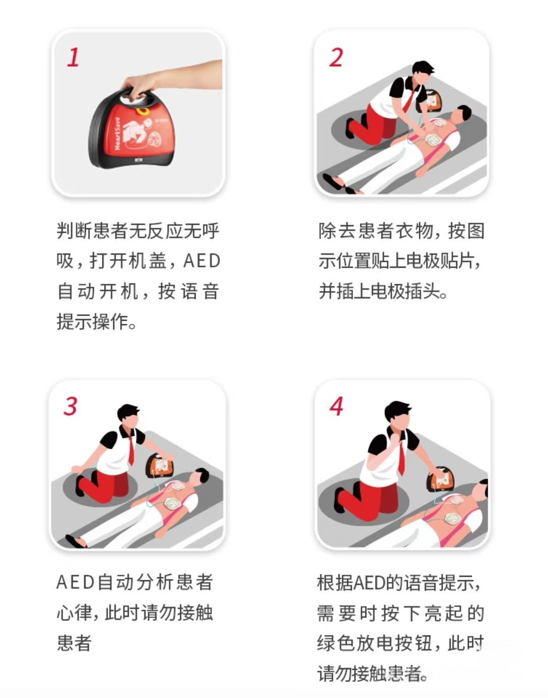

防灾减灾，水利先行
人人学急救，急救为人人
学习急救知识，挽救生命。掌握灾害应对、CPR、AED使用方法，在紧急情况下做出正确反应。
急救与灾害应对知识
居家防灾要点
定期检查家中电路、燃气设备，准备应急包，包含饮用水、食品、手电筒、急救药品等，确保家庭成员熟悉应急出口位置。
CPR核心要点
心肺复苏的黄金时间是4-6分钟，按压深度5-6厘米，频率100-120次/分钟，按压与呼吸比例30:2，直到专业人员到达。
车辆应急措施
车内应配备灭火器、三角警示牌、急救包等物品。遇紧急情况，应尽快将车辆移至安全区域，开启危险报警闪光灯。
特殊人群保护
儿童、老人和残障人士在灾害中需要特别关注，应提前制定帮扶计划，确保他们能及时获得救助和引导。
逃生路线选择
选择最短且安全的逃生路线，避开电梯，尽量走疏散楼梯。熟悉建筑物内的应急指示标志，提前规划多条逃生路线。
AED使用提示
自动体外除颤器(AED)可在心脏骤停时挽救生命，使用时需按照语音提示操作，贴好电极片后确保无人接触患者再进行电击。
居家防灾要点
定期检查家中电路、燃气设备，准备应急包，包含饮用水、食品、手电筒、急救药品等，确保家庭成员熟悉应急出口位置。
CPR核心要点
心肺复苏的黄金时间是4-6分钟，按压深度5-6厘米，频率100-120次/分钟，按压与呼吸比例30:2，直到专业人员到达。
灾害急救指南
了解各类灾害的应急处理方法和预防措施，提高应对突发事件的能力，保护自己和他人的生命安全。
气象灾害共性防范措施
预警信号通用规则
- 蓝色预警：24小时内可能受影响，需关注
- 黄色预警：12-24小时内可能发生，需防御
- 橙色预警：6-12小时内可能发生，需躲避
- 红色预警：6小时内可能发生，需紧急应对
通用防范准备
- 关注气象预报，提前做好准备
- 准备应急包：3天饮用水、压缩食品、手电等
- 检查电路、排水系统安全性
- 确定家庭应急联络人和集合点
- 了解社区应急避难场所位置和路线
灾后通用处理
- 确认安全后再返回住所，注意建筑物稳定性
- 检查水电安全，防止漏电、燃气泄漏
- 注意饮食卫生，不喝生水，不吃变质食物
- 做好环境消毒，防止疾病传播
- 配合相关部门进行灾后处置和登记
预警信号识别
台风灾害示意图
- 蓝色预警：24小时内平均风力达6级以上，或阵风8级以上并可能持续
- 黄色预警：24小时内平均风力达8级以上，或阵风10级以上并可能持续
- 橙色预警：12小时内平均风力达10级以上，或阵风12级以上并可能持续
- 红色预警：6小时内平均风力达12级以上，或阵风14级以上并可能持续
小提示
台风预警升级时，应减少外出，远离门窗，准备好应急物品。红色预警发布时，应立即到安全场所躲避。
居家防范措施
- 加固门窗，用胶带在玻璃上贴成"米"字形增强抗风能力
- 移除阳台花盆、杂物等易被风吹落物品，防止高空坠物
- 检查电路、燃气安全，必要时关闭总阀，防止泄漏引发事故
- 储备3-7天饮用水和不易变质食物，如压缩饼干、罐头等
- 准备应急照明设备，如手电筒、应急灯及备用电池
- 将家具等重物移至室内中央，避免被风吹倒砸坏门窗
- 检查房屋排水系统，确保雨水能顺利排出
车辆防护与应对
- 台风来临前将车辆停放在地势较高、远离树木、广告牌的安全地带
- 不要将车停在地下车库、低洼地带、海边等易受淹区域
- 台风期间尽量避免驾车外出，尤其是桥梁、高架、隧道等危险区域
- 如在行车中遭遇台风，应立即找安全地方停车，远离车窗，保持冷静
- 车辆被淹时，保持冷静，果断破窗逃生，优先砸侧窗四角
逃生路线选择
- 远离海边、河边、低洼地带，这些区域易受风暴潮侵袭
- 向地势较高的坚固建筑物转移，如政府指定的应急避难所
- 避开广告牌、电线杆、树木、脚手架等高空易坠物
- 提前熟悉社区应急避难场所位置和最短路线
- 如果居住在危旧房屋、低洼地区，应提前转移至安全地带
逃生与自救技巧
- 保持冷静，优先保护头部，避免被飞落物砸伤
- 如在户外，立即寻找坚固建筑物躲避，远离门窗和外墙
- 如被卷入水中，尽量抓住漂浮物，保持头部露出水面
- 在室内时，远离门窗，躲在坚固家具下方或承重墙墙角
- 如被困，发出明显求救信号，如挥动鲜艳衣物、使用手电筒
- 多人家中避险时，保持通讯畅通，互相照应
特殊人群保护
- 老年人：提前转移至安全住所，准备常用药品和保暖物品
- 婴幼儿：准备充足奶粉、尿布，保持温暖，避免惊吓
- 病患：准备足够药量，记录紧急联系人及病情信息
- 残障人士：提前安排专人协助转移，准备必要的辅助器具
预警信号识别
暴雨灾害示意图
- 蓝色预警：12小时内降雨量将达50mm以上，或已达50mm以上且降雨可能持续
- 黄色预警：6小时内降雨量将达50mm以上，或已达50mm以上且降雨可能持续
- 橙色预警：3小时内降雨量将达50mm以上，或已达50mm以上且降雨可能持续
- 红色预警：3小时内降雨量将达100mm以上，或已达100mm以上且降雨可能持续
小提示
1小时降雨量达20mm以上即为短时强降雨，易引发城市内涝。连续24小时降雨量超过50mm即达到暴雨标准。
居家防范措施
- 清理排水管道、地漏，确保排水畅通，防止雨水倒灌
- 准备挡水板、沙袋等防涝物品，在门口设置挡水设施
- 将贵重物品、电器设备转移至高处，防止被水浸泡
- 检查电路安全，遇积水可能淹没电器时，及时切断电源
- 准备手电筒、雨具、防水鞋等应急物品，以备不时之需
- 储存足够的饮用水，防止自来水系统因暴雨受损而停水
- 关闭门窗，防止雨水进入室内，必要时用胶带密封门窗缝隙
行车安全指南
- 尽量避免驾车出行，尤其是低洼路段、涵洞、隧道等易积水区域
- 遇积水路段，不强行通过，确认水深不超过轮胎一半再缓慢通过
- 车辆被困水中，保持冷静，立即解锁车门，破窗逃生（优先砸侧窗四角）
- 保持与前车距离，降低车速，开启近光灯和示廓灯，谨慎驾驶
- 避开广告牌、大树等可能倒伏的物体，选择安全停车地点
- 如在高速公路遇暴雨，应开启双闪，降低车速，必要时到服务区躲避
- 记住"车遇积水莫停留，果断弃车保生命"的原则
逃生路线选择
- 向地势高处转移，远离低洼地带、地下车库、地下室
- 避开地下车库、涵洞、隧道等易积水区域，这些地方可能瞬间被淹没
- 远离河道、水库、湖泊等水域边缘，防止水位上涨和堤坝溃决
- 避开山区，防止山洪、滑坡和泥石流等次生灾害
- 选择坚固的高层建筑作为避难场所，避免在平房或危楼中停留
洪水自救要点
- 向地势高处转移，如屋顶、高层建筑物的上层
- 携带必要的饮用水、食物、药品和通讯设备
- 如被洪水围困，及时发出求救信号，如挥动鲜艳衣物、使用手电筒
- 不要游泳逃生，可利用门板、桌椅、塑料桶等漂浮物
- 远离电力设施，防止触电，不要触摸潮湿的墙壁和电器
- 如洪水进入室内，应立即向楼上转移，切勿贪恋财物
- 落入洪水中，保持镇定，尽量抓住漂浮物，头部露出水面
预警信号识别
雷暴灾害示意图
- 蓝色预警：6小时内可能发生雷暴天气，可能会造成雷电灾害
- 黄色预警：6小时内发生雷暴可能性大，或已经发生并可能持续
- 橙色预警：2小时内发生强雷暴，并伴有短时大风、强降水等
- 红色预警：2小时内发生强雷暴，并伴有特大暴雨、冰雹等强对流天气
小提示
通过观察闪电与雷声的间隔时间可判断雷暴远近：间隔3秒约1公里，间隔10秒约3公里。间隔时间缩短说明雷暴正在靠近。
室内防范措施
- 关闭门窗，防止球形闪电进入室内，远离门窗和外墙
- 拔掉家用电器电源插头，关闭总开关，防止雷电波侵入
- 不使用固定电话、电脑、电视等电子设备，避免雷击伤害
- 不洗澡、不接触自来水，防止水体导电引发触电事故
- 远离水管、暖气片、空调外机等金属物体和导电体
- 如房屋没有防雷设施，应尽量躲在室内中央位置
- 安装合格的防雷装置，并定期检测维护
户外避险要点
- 尽快进入室内，避免停留在空旷地带和高处
- 远离高大树木、电线杆、广告牌等高耸物体，至少保持两倍高度的距离
- 不站在山顶、楼顶、高地等制高点，这些地方易遭雷击
- 不在水域附近停留，不游泳、钓鱼、划船，水体易导电
- 避免多人聚集，保持安全距离，分散站立
- 不使用手机通话，尤其在空旷地带
- 如在野外无法躲避，应选择低洼处蹲下，双脚并拢，低头抱膝
车内防雷措施
- 雷暴天气尽量不要驾车外出，尤其是高速公路和空旷地带
- 如在车内，关闭车窗，留在车内躲避，车辆是相对安全的法拉第笼
- 不接触车内金属部件，如方向盘、门把手、换挡杆等
- 关闭收音机、GPS等电子设备，拔掉充电线，减少引雷风险
- 避免停留在空旷地带、高地或树下，选择低地停车
- 不将车停在高压电线下或变压器附近
雷击急救措施
- 确认环境安全，避免救援人员遭受二次雷击
- 检查伤者意识和呼吸，必要时立即进行心肺复苏，雷击可能导致心脏骤停
- 处理烧伤：用冷水冲洗，覆盖无菌纱布，避免弄破水泡
- 检查是否有骨折或其他外伤，妥善固定伤肢
- 及时送医，即使表面伤势轻微也需检查，雷击可能造成内部伤害
- 记录雷击发生时间和伤者状态，向医护人员详细说明情况
地质灾害共性防范措施
高发区域识别
- 山区、丘陵地带及陡坡区域，坡度大于25度的区域风险高
- 断裂带、断层经过区域，地质结构不稳定
- 采矿区、工程建设区及周边区域
- 河道两侧、沟谷出口处易发生泥石流
- 曾经发生过地质灾害的区域
前兆现象观察
- 出现异常声响，如岩石摩擦、断裂声
- 地面出现裂缝、鼓包或下沉现象
- 泉水突然干涸或水量突增、水质变浑
- 动植物异常反应，如动物惊恐不安、植物枯萎歪斜
- 建筑物出现裂缝、墙体歪斜、门窗变形
应急准备措施
- 熟悉居住地附近的地质灾害隐患点和撤离路线
- 准备应急包，包含食品、水、急救用品、手电筒等
- 制定家庭应急方案，确定联络方式和集合点
- 加固房屋，在危险区域设置警示标志
- 关注气象和地质灾害预警信息，提前做好撤离准备
预警与震级识别
地震灾害示意图
- 地震预警：震波到达前的几秒到几十秒，利用电波快于地震波的原理
- 震级划分：微震(＜3级)、小震(3-4.4级)、中震(4.5-6级)、强震(6-7级)、大地震(7-8级)、巨大地震(＞8级)
- 地震烈度：表示地面受影响程度，分为1-12度，度数越高破坏越严重
- 纵波先到达，表现为上下颠簸；横波后到达，表现为左右摇晃，破坏性更大
小提示
地震预警时间短暂，收到预警后应立即采取避险措施，而不是等待确认。记住"伏地、遮挡、手抓牢"的避震口诀。
室内避震要点
- 迅速躲在结实的家具下方，如桌子、床底下，保护头部和颈部
- 选择承重墙墙角、卫生间等小开间区域躲避，这些地方相对安全
- 远离窗户、玻璃门、外墙及可能坠落的物体（灯具、书架等）
- 不要跳楼，不要乘坐电梯，避免在楼梯间停留
- 如果在厨房，迅速关闭燃气阀门，然后躲避
- 用坐垫、枕头等柔软物品保护头部，降低受伤风险
公共场所避震
- 保持冷静，听从现场工作人员指挥，不盲目拥挤、奔跑
- 在商场、影院等场所，躲在立柱或坚固的柜台下方，远离玻璃橱窗
- 在学校，迅速躲在课桌下，用书包保护头部，震后有序撤离
- 在地铁中，待列车停稳后，听从工作人员指挥有序疏散
- 在体育馆、剧院等大型场所，避免拥向出口，选择就地躲避
户外避震要点
- 远离建筑物、电线杆、广告牌、路灯等易倒塌物体
- 避开狭窄街道、围墙、天桥、立交桥等危险区域
- 在山区，远离陡坡、悬崖，防止滑坡、落石等次生灾害
- 在水边，远离河堤、湖边，防止堤坝溃决或水位突变
- 如驾车时遇地震，应尽快停车在开阔地带，留在车内避震
震后自救互救
- 保持冷静，检查自身受伤情况，进行简单自救
- 如被埋压，不要大声呼喊，保存体力，用敲击方式发出求救信号
- 设法扩大生存空间，清除口鼻附近杂物，保持呼吸通畅
- 救助他人时，先确定环境安全，再进行救援，避免二次伤害
- 优先救助容易获救的人，先救青壮年，再救其他人
- 救助被埋压者时，先暴露头部，保持呼吸通畅，再逐步解救身体
前兆识别
泥石流灾害示意图
- 沟谷内传来类似火车轰鸣或闷雷声，音量逐渐增大
- 沟谷两侧山体出现震动感，山坡上岩石滚落
- 沟谷内水位突然上涨或突然干涸，水质变得浑浊
- 山坡出现裂缝，植被异常歪斜或枯萎
- 持续暴雨或融雪后，山区沟谷易发生泥石流
小提示
泥石流往往伴随暴雨发生，当听到山谷中有异常声响时，即使未看到泥石流，也应立即撤离。泥石流流动速度快，不要试图沿沟谷上下游逃跑。
逃生路线选择
- 立即向泥石流沟谷两侧的高处山坡转移，爬得越高越好
- 选择稳定的高地作为避难场所，避开树木、电线杆等易倒伏物体
- 不要沿泥石流沟谷上下游方向逃跑，这是最危险的路线
- 不要在凹形陡坡、危岩突出的地方停留或躲避
- 提前熟悉居住地附近的泥石流避难场所和疏散路线
逃生自救技巧
- 保持冷静，迅速判断泥石流流动方向，向垂直方向撤离
- 携带轻便应急物品，不要贪恋财物，争取宝贵逃生时间
- 如携带重物，应果断丢弃，减轻负担快速撤离
- 如被泥石流围困，向稳定的高处转移，尽可能抓住大树等固定物体
- 如被卷入泥石流，要尽量保持身体直立，寻找机会抓住稳固物体
- 逃生时注意保护头部，防止被石块、杂物砸伤
居住在危险区的防范措施
- 了解居住地是否属于泥石流易发区，提前规划撤离路线
- 雨季来临前，清理房屋周边排水沟渠，保持排水畅通
- 在房屋周围修建简易防护工程，如挡土墙、排水沟等
- 暴雨期间，不要在沟谷内停留，夜间保持警惕，注意异常声响
- 条件允许时，尽量搬迁至安全区域居住
识别与预防
滑坡灾害示意图
- 注意观察山坡是否有裂缝、鼓包、泉水突然干涸或突增等现象
- 不在陡坡、沟谷附近搭建房屋或长时间停留
- 暴雨期间特别警惕滑坡发生
逃生路线
- 发现滑坡迹象，立即向滑坡体两侧的稳定区域撤离
- 不要顺着滑坡方向逃跑，也不要在滑坡体上方停留
- 如无法逃离，应迅速抱住身边的大树等稳固物体
特殊人群保护
- 提前为老人、儿童和行动不便者规划疏散路线和帮助措施
- 明确专人负责帮助特殊人群撤离
- 为特殊人群准备便携应急包，包含必要药品和物品
心肺复苏 (CPR) 步骤
CPR是一项挽救生命的技能，在紧急情况下正确实施可以大大提高患者的生存几率。点击下方步骤查看详细操作流程：
在进行任何急救前，确保现场对您和患者都是安全的：
- 评估周围环境，确保没有持续的危险（如火灾、触电风险等）
- 如果现场不安全，在保证自身安全的前提下，尝试将患者转移到安全区域
- 不要成为另一个受害者
正确的跪位姿势有助于有效地进行胸外按压：
- 跪在患者一侧，双膝与肩同宽
- 保持身体垂直，肩膀位于患者胸部正上方
- 膝盖距离患者大约一拳的距离
快速判断患者是否有意识和呼吸：
- 拍打患者双肩并大声呼喊："您还好吗？"
- 观察患者胸部是否有起伏，聆听是否有呼吸声
- 判断时间不超过10秒
- 如果患者没有反应且没有呼吸或仅有濒死叹息样呼吸，立即呼救并开始CPR
胸外按压是CPR的核心步骤，正确的按压方法至关重要：
- 将一只手的掌根放在患者两乳头连线中点（胸骨中下1/3交界处）
- 另一只手重叠其上，十指相扣，保持手臂垂直
- 以每分钟100-120次的速率按压，按压深度至少5厘米，但不超过6厘米
- 每次按压后让胸部完全回弹，按压与放松时间大致相等
在进行人工呼吸前，必须先开放患者的气道：
- 清除患者口腔内的异物（如呕吐物、假牙等）
- 采用仰头抬颌法：一手置于患者前额，轻轻加压使头部后仰，另一手的手指置于下颌骨下方，向上抬起下颌
- 避免压迫喉部，以免阻塞气道
在开放气道后，进行2次人工呼吸：
- 用嘴严密包裹患者的嘴，同时捏住患者的鼻子
- 缓慢吹气持续1秒以上，观察患者胸部是否隆起
- 每次吹气量约500-600毫升，避免过度通气
- 每次吹气后松开鼻子，让患者胸部自然回落
按照30次按压+2次呼吸的比例进行循环操作：
- 每完成30次胸外按压后，进行2次人工呼吸
- 连续进行5个循环（约2分钟）后，再次评估患者的呼吸和脉搏
- 如果仍无呼吸或脉搏，继续进行CPR直至AED到达或专业急救人员接手
如果AED设备到达，应尽快使用：
- 按照AED的语音提示操作
- 在贴放电极片前，确保患者胸部干燥
- 按下分析按钮，在分析期间不要接触患者
- 如果AED建议电击，确保无人接触患者后按下电击按钮
- 电击后立即继续CPR，从胸外按压开始
持续进行CPR和使用AED，直到：
- 患者恢复自主呼吸和脉搏
- 专业急救人员到达并接手
心肺复苏流程示意图
关键步骤说明：
- 确保施救环境无危险
- 按压位置：两乳头连线中点（胸骨中下段）
- 按压深度：5-6厘米（成人）
- 按压频率：100-120次/分钟
- 按压呼吸比：30:2（单人施救）
- 每次按压后让胸部完全回弹
- 仰头抬颌法打开气道
- 每次吹气1秒，使胸廓抬起
- 30次按压+2次呼吸，直至专业救援到达
CPR 视频教程
请点击我观看教程重要提示
如果您不是专业急救人员，持续进行胸外按压直至专业人员到达是最有效的急救方式。
AED使用指南
自动体外除颤器(AED)是一种可以诊断特定心律失常并给予电击除颤的设备，是非专业急救人员的重要工具。点击下方步骤查看详细操作流程：
AED使用步骤
打开AED的盖子，设备会自动开机并提供语音指导：
- 大多数AED在打开盖子后会自动开机
- 如果没有自动开机，请按电源按钮
- 仔细听AED的语音提示并按照指示操作
在贴放电极片前，需要暴露患者的胸部：
- 解开患者的上衣，暴露胸部
- 如果胸部有汗水，用干布擦干
按照AED电极片上的图示贴放：
- 一片放在患者右锁骨下方（胸骨右侧）
- 另一片放在患者左乳头外侧（左下胸）
- 确保电极片紧密贴合皮肤，尤其是边缘
如果电极片需要连接到AED主机，按照以下步骤操作：
- 将电极片的插头插入AED主机相应的插座
- 确保插头完全插入，连接牢固
- 部分新型AED的电极片是无线连接的，无需此步骤
AED将自动分析患者的心律：
- AED提示"正在分析心律"时，确保所有人远离患者
- 大声喊出"大家离开！"，并确保没有人接触患者
- 分析过程中不要接触患者，以免影响分析结果
如果AED建议电击，按照以下步骤操作：
- 确保所有人都已离开患者，再次大声确认"大家离开！"
- 按下AED上的电击按钮
- 电击后，AED会提示继续进行CPR
电击后或AED不建议电击时，继续进行CPR：
- 按照30:2的比例进行胸外按压和人工呼吸
- 持续2分钟后，AED会再次提示分析心律
- 重复分析和电击（如需要）的过程
- 直到专业急救人员到达或患者恢复自主呼吸和心跳
AED操作流程示意图
使用提示
AED设计为任何人都可以使用，即使没有医学背景。只需严格按照语音提示操作即可。记住：在等待专业救援的过程中，每一秒都至关重要！
防溺水安全模拟
通过互动游戏学习防溺水安全知识，掌握正确的救援方法，避免悲剧发生。
夏日午后，你在公园河边散步。突然听到微弱的呼救声！转头看去，发现一个孩子在河水中挣扎。你对这处水域情况缺乏足够了解，周围没有其他人。
结果标题
更多急救资源
以下是一些权威的急救知识学习平台和相关资源，帮助您深入学习急救技能，了解更多应急救护知识：
急救培训信息
参加线下急救培训课程是学习急救技能最有效的方式。您可以通过当地红十字会或医疗机构了解近期的培训安排，获取专业的指导和实践机会。